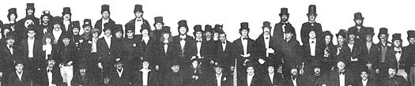

ABOVE. August West recently sponsored the world's largest gathering of chimney sweeps. More than 200 sweeps who use the August West System exchanged trade secrets and listened to notable authorities. Notables included Dr. Jay Shelton, author of THE WOODBURNERS ENCYCLOPEDIA and WOOD HEAT SAFETY. Bob Schwartz, founder of The School for Entrepeneurs. Prof. J. W. Bartok, co-author of BURNING WOOD and Robert Ahern, insurance expert. 28 States were represented at the convention.